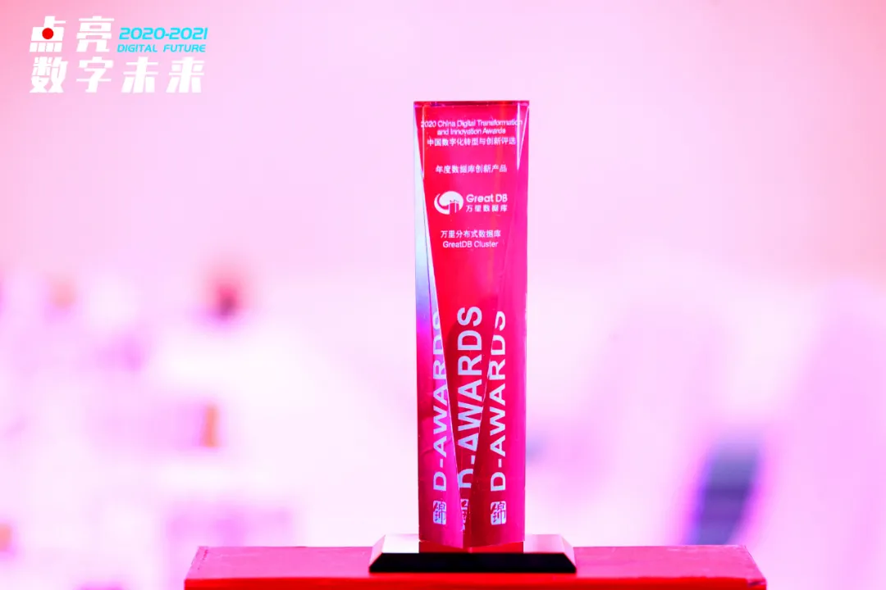

要闻 | 万里数据库荣膺2020年度数据库创新产品奖
2021年3月6日，“2020-2021中国数字化年会”之“2020年度中国数字化转型与创新评选颁奖盛典”在成都盛大举行。万里数据库经过提交资料、实地考察、公开网络投票、组委会审议等数轮环节，历时10个月，最终凭借在大客户合作、信创生态、行业测评、业界评选、行业大赛等多方面的突出表现，入选 2020年度数字化产品与解决方案TOP50，获《年度数据库创新产品》奖项。

“中国数字化转型与创新评选”，由数字产业创新研究中心、锦囊专家、北京大学光华管理学院、首席数字官联合全国20多家CIO组织机构、行业协会共同发起，旨在发现和研究中国企业数字化转型与创新进程与关键指标，将大胆、务实且创新的案例、产品与技术进行推广，寻找在数字化领域有卓越贡献的企业高管、有深度洞见的专家，为企业的数字化之路点亮明灯。本评选已成功举办三届，累计参评企业超过1500家、涉及2000余个数字化项目，已成为国内数字化领域最受关注的评选活动之一。
据统计，万里数据库所在的产品组，共收到409份申请表，最终评选产生50个获奖产品及解决方案，涉及数据库、云计算、大数据、物联网、区块链等众多领域，最终万里数据库从中脱颖而出，获得评委和专家组的肯定，这是万里数据库在技术创新、解决方案、市场推广、生态建设等各方面努力的成果，标志着公司的综合实力已经处于行业领先水平。
数据库是信息系统的重要基石，作为存储和处理数据的载体，具有举足轻重的作用。万里数据库是国内新一代分布式数据库的代表厂商，经过10余年的应用验证，产品在功能、性能、稳定性、易用性等方面均处于行业领先水平，历经500多个业务场景的锤炼，已广泛应用于金融、能源、通信、政府、交通等多个行业。
未来，万里数据库将继续坚持以“极致性能、极致稳定、极致易用”为目标，联合更多优秀的合作伙伴打造更丰富的数字生态，共同推进信息技术应用创新、新基建等重要领域的发展，为用户数字化升级提供更加强有力的保障。
推荐阅读1. 再获肯定 | 万里数据库入选《2020年度中国信创TOP500》
2. 3分钟了解万里数据库的2020
3. 万里数据库与联通在线沃音乐携手 共建海纳数据智能联合研发实验室


扫码二维码
关注公众号